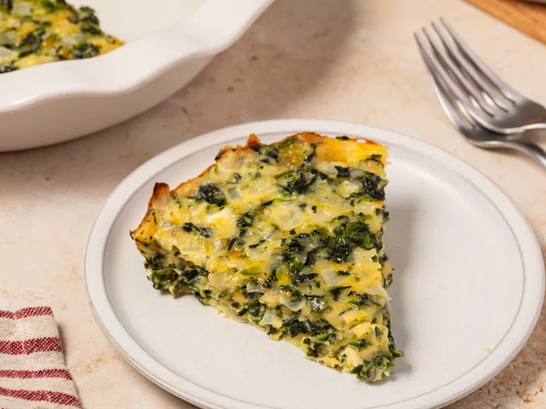

Crustless Spinach Quiche
Home

Description
This crustless quiche made with eggs, spinach, and Muenster cheese is perfect to serve at any meal. With no crust to bake, this light-tasting quiche is ready to serve in under an hour.
Ingredients
Here's what you'll need to make this top-rated crustless quiche:
- Eggs: Because this quiche doesn't have a crust, you'll need five eggs to hold the mixture together.
- Spinach: Frozen spinach (thawed and squeezed dry) works best, but you can use fresh spinach if that's all you have on hand.
- Onion: A yellow or white onion adds a depth of flavor to the quiche.
- Muenster Cheese: Muenster is a mild cheese that melts well and will add a delicious flavor cheesy to the quiche.
- Spices: Simple salt and pepper is all you need.
Steps
- Gather the ingredients. Preheat oven to 350 degrees F (175 degrees C). Lightly grease a 9-inch pie pan.
- Heat oil in a large skillet over medium-high heat. Add onions and cook, stirring occasionally, until soft, about 3 minutes. Stir in spinach and continue to cook until excess moisture has evaporated.
- Whisk together eggs, salt, and pepper in a large bowl. Add Muenster cheese and spinach mixture and stir until well blended.
- Pour into the prepared pan.
- Bake in the preheated oven until eggs have set, about 30 minutes.
- Remove from the oven and let cool for 10 minutes before serving.